Rozpoznávání číslic pomocí neuronových sítí#
!pip install -r requirements.txt
import matplotlib.pyplot as plt
import numpy as np
import torch
# Make device agnostic code
device = "cuda" if torch.cuda.is_available() else "cpu"
device
'cuda'
#device = 'cpu' # Force CPU for this example
torch.device(device)
device(type='cuda')
Příprava dat#
from torchvision.datasets import MNIST
dataset = MNIST(root = 'datasets/', download = True)
print(len(dataset))
60000
N = 64
plt.figure(figsize=(6, 8))
for i in range(N):
a = int(np.sqrt(N))
plt.subplot(a, a, i + 1)
image, label = dataset[i]
#image = np.array(image)
#image = image.reshape((28, 28))
plt.axis('off')
plt.imshow(image, cmap = 'gray')
plt.title(f'label: {label}')
plt.tight_layout(rect=[0, 0.03, 1, 0.95])
plt.suptitle('MNIST Dataset Samples', fontsize=16)
plt.show()
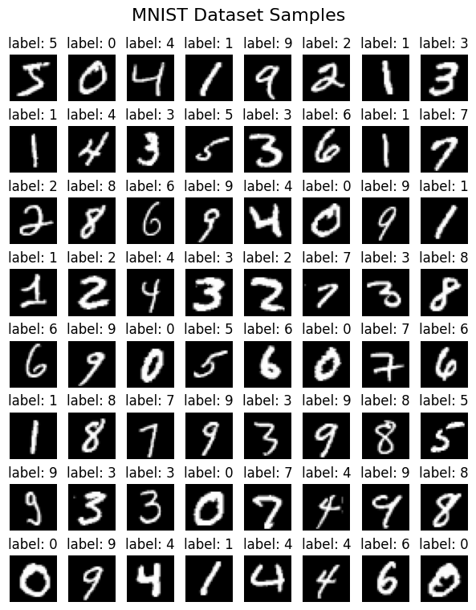
test_fraction = 0.2
Ntrain = int(len(dataset) * (1 - test_fraction))
print(f'Train size: {Ntrain}, Test size: {len(dataset) - Ntrain}')
X_train, y_train = dataset.data[:Ntrain], dataset.targets[:Ntrain]
X_test, y_test = dataset.data[Ntrain:], dataset.targets[Ntrain:]
Train size: 48000, Test size: 12000
# Scale images to the [0, 1] range
X_train = X_train.float() / 255
X_test = X_test.float() / 255
X_train = X_train.unsqueeze(1) # Add channel dimension
X_test = X_test.unsqueeze(1) # Add channel dimension
def to_categorical(y, num_classes):
""" 1-hot encodes a tensor """
return torch.eye(num_classes)[y].float()
num_classes = 10
# convert class vectors to binary class matrices
y_train = to_categorical(y_train, num_classes)
y_test = to_categorical(y_test, num_classes)
X_train.shape
torch.Size([48000, 1, 28, 28])
y_train[0], y_train.shape
(tensor([0., 0., 0., 0., 0., 1., 0., 0., 0., 0.]), torch.Size([48000, 10]))
Konstrukce modelu#
MLP model#
import torch.nn as nn
import torch.optim as optim
input_size = (1, 28, 28) # (channels, height, width)
hidden_size = 64 # Example hidden layer size
num_classes = 10
# Define the CNN model
model = nn.Sequential(
nn.Flatten(),
nn.Linear(input_size[-1]**2, hidden_size),
nn.ReLU(),
nn.Dropout(0.2),
nn.Linear(hidden_size, 20),
nn.ReLU(),
nn.Dropout(0.2),
nn.Linear(20, num_classes),
nn.ReLU(),
#nn.Softmax(dim=0) # Softmax for multi-class classification
).to(device)
print(model)
# loss function and optimizer
loss_fn = nn.CrossEntropyLoss().to(device) # cross entropy
optimizer = optim.Adam(model.parameters(), lr=0.001)
Sequential(
(0): Flatten(start_dim=1, end_dim=-1)
(1): Linear(in_features=784, out_features=64, bias=True)
(2): ReLU()
(3): Dropout(p=0.2, inplace=False)
(4): Linear(in_features=64, out_features=20, bias=True)
(5): ReLU()
(6): Dropout(p=0.2, inplace=False)
(7): Linear(in_features=20, out_features=10, bias=True)
(8): ReLU()
)
CNN model#
import torch.nn as nn
import torch.optim as optim
input_size = (1, 28, 28) # (channels, height, width)
kernel_size = 5
padding = kernel_size // 2 # Padding to keep the output size same as input size
channels_1 = 64
channels_2 = 128
kernel_size_pool = 3
stride_pool = 3
num_classes = 10
# Define the CNN model
model = nn.Sequential(
nn.Conv2d(kernel_size=kernel_size, in_channels=1, out_channels=channels_1, padding=padding),
nn.ReLU(),
nn.MaxPool2d(kernel_size=kernel_size_pool, stride=stride_pool),
nn.Dropout(0.4),
nn.Conv2d(kernel_size=kernel_size, in_channels=channels_1, out_channels=channels_2, padding=padding),
nn.ReLU(),
nn.MaxPool2d(kernel_size=kernel_size_pool, stride=stride_pool),
nn.Flatten(), # Flatten the output for the fully connected layer
nn.Dropout(0.4),
nn.Linear((input_size[-1]//stride_pool**2)**2*channels_2, num_classes),
#nn.ReLU(),
#nn.Linear(40, 10),
#nn.Softmax(dim=0) # Softmax for multi-class classification
).to(device)
print(model)
# loss function and optimizer
loss_fn = nn.CrossEntropyLoss().to(device) # cross entropy
optimizer = optim.Adam(model.parameters(), lr=0.001)
Sequential(
(0): Conv2d(1, 64, kernel_size=(5, 5), stride=(1, 1), padding=(2, 2))
(1): ReLU()
(2): MaxPool2d(kernel_size=3, stride=3, padding=0, dilation=1, ceil_mode=False)
(3): Dropout(p=0.4, inplace=False)
(4): Conv2d(64, 128, kernel_size=(5, 5), stride=(1, 1), padding=(2, 2))
(5): ReLU()
(6): MaxPool2d(kernel_size=3, stride=3, padding=0, dilation=1, ceil_mode=False)
(7): Flatten(start_dim=1, end_dim=-1)
(8): Dropout(p=0.4, inplace=False)
(9): Linear(in_features=1152, out_features=10, bias=True)
)
from torchsummary import summary
summary(model, input_size=input_size, device=device)
----------------------------------------------------------------
Layer (type) Output Shape Param #
================================================================
Conv2d-1 [-1, 64, 28, 28] 1,664
ReLU-2 [-1, 64, 28, 28] 0
MaxPool2d-3 [-1, 64, 9, 9] 0
Dropout-4 [-1, 64, 9, 9] 0
Conv2d-5 [-1, 128, 9, 9] 204,928
ReLU-6 [-1, 128, 9, 9] 0
MaxPool2d-7 [-1, 128, 3, 3] 0
Flatten-8 [-1, 1152] 0
Dropout-9 [-1, 1152] 0
Linear-10 [-1, 10] 11,530
================================================================
Total params: 218,122
Trainable params: 218,122
Non-trainable params: 0
----------------------------------------------------------------
Input size (MB): 0.00
Forward/backward pass size (MB): 1.03
Params size (MB): 0.83
Estimated Total Size (MB): 1.86
----------------------------------------------------------------
Trénování neuronové sítě#
To keep track of how long training takes I am adding a
timeSince(timestamp) function which returns a human readable string:
import time
import math
def timeSince(since):
now = time.time()
s = now - since
m = math.floor(s / 60)
s -= m * 60
return '%dm %ds' % (m, s)
# Calculate accuracy (a classification metric)
def accuracy_fn(y_true, y_pred):
y_true = torch.argmax(y_true, dim=1) # Convert one-hot encoded labels to class indices
y_pred = torch.argmax(y_pred, dim=1) # Convert model outputs to class indices
correct = torch.eq(y_true, y_pred).sum().item() # torch.eq() calculates where two tensors are equal
acc = (correct / len(y_pred)) * 100
return acc
n_epochs = 20 # number of epochs to run
batch_size = 256 # size of each batch
batches_per_epoch = len(X_train) // batch_size
loss_array = [] # to store loss values
acc_array = [] # to store accuracy values
test_acc_array = [] # to store test accuracy values
# Put data to target device
X_train, y_train = X_train.to(device), y_train.to(device)
X_test, y_test = X_test.to(device), y_test.to(device)
start_time = time.time()
# Build training and evaluation loop
for epoch in range(n_epochs):
### Training
model.train()
for i in range(batches_per_epoch):
start = i * batch_size
# take a batch
Xbatch = X_train[start:start+batch_size]
ybatch = y_train[start:start+batch_size]
# forward pass
y_pred = model(Xbatch)
#print(y_pred.shape, y_pred[0,:])
loss = loss_fn(y_pred, ybatch)
acc = accuracy_fn(ybatch, y_pred)
# backward pass
optimizer.zero_grad()
loss.backward()
# update weights
optimizer.step()
loss_array.append(loss.item())
acc_array.append(acc)
print(f'Epoch {epoch + 1}/{n_epochs}, Batch {i + 1}/{batches_per_epoch} | Loss: {loss:.5f}, Accuracy: {acc:.2f}%', end='\r')
### Testing
model.eval()
with torch.inference_mode():
# 1. Forward pass
y_pred = model(X_test).squeeze()
# 2. Caculate loss/accuracy
test_loss = loss_fn(y_pred, y_test)
test_acc = accuracy_fn(y_test, y_pred)
test_acc_array.append(test_acc)
# Print out what's happening every epoch
print(f"{timeSince(start_time)} | Epoch: {epoch + 1} | Loss: {loss:.5f}, Accuracy: {acc:.2f}% | Test loss: {test_loss:.5f}, Test acc: {test_acc:.2f}%")
0m 0s | Epoch: 1 | Loss: 0.07458, Accuracy: 98.05% | Test loss: 0.08735, Test acc: 97.54%
0m 1s | Epoch: 2 | Loss: 0.04716, Accuracy: 98.44% | Test loss: 0.06026, Test acc: 98.28%
0m 2s | Epoch: 3 | Loss: 0.05926, Accuracy: 98.83% | Test loss: 0.05016, Test acc: 98.53%
0m 4s | Epoch: 4 | Loss: 0.04147, Accuracy: 99.22% | Test loss: 0.04631, Test acc: 98.69%
0m 5s | Epoch: 5 | Loss: 0.03244, Accuracy: 99.22% | Test loss: 0.04016, Test acc: 98.78%
0m 5s | Epoch: 6 | Loss: 0.03042, Accuracy: 99.22% | Test loss: 0.03648, Test acc: 98.97%
0m 6s | Epoch: 7 | Loss: 0.02880, Accuracy: 98.83% | Test loss: 0.03863, Test acc: 98.80%
0m 7s | Epoch: 8 | Loss: 0.02011, Accuracy: 98.83% | Test loss: 0.03337, Test acc: 99.02%
0m 8s | Epoch: 9 | Loss: 0.02584, Accuracy: 98.83% | Test loss: 0.03451, Test acc: 98.99%
0m 9s | Epoch: 10 | Loss: 0.00603, Accuracy: 100.00% | Test loss: 0.03152, Test acc: 98.97%
0m 10s | Epoch: 11 | Loss: 0.03485, Accuracy: 98.83% | Test loss: 0.02893, Test acc: 99.15%
0m 11s | Epoch: 12 | Loss: 0.01401, Accuracy: 99.22% | Test loss: 0.02852, Test acc: 99.16%
0m 13s | Epoch: 13 | Loss: 0.02479, Accuracy: 99.22% | Test loss: 0.02663, Test acc: 99.11%
0m 13s | Epoch: 14 | Loss: 0.02688, Accuracy: 99.22% | Test loss: 0.02919, Test acc: 99.12%
0m 14s | Epoch: 15 | Loss: 0.01309, Accuracy: 99.61% | Test loss: 0.02491, Test acc: 99.23%
0m 15s | Epoch: 16 | Loss: 0.01312, Accuracy: 99.61% | Test loss: 0.02560, Test acc: 99.23%
0m 16s | Epoch: 17 | Loss: 0.00635, Accuracy: 100.00% | Test loss: 0.02559, Test acc: 99.31%
0m 17s | Epoch: 18 | Loss: 0.00660, Accuracy: 99.61% | Test loss: 0.02446, Test acc: 99.29%
0m 18s | Epoch: 19 | Loss: 0.00416, Accuracy: 100.00% | Test loss: 0.02355, Test acc: 99.28%
0m 19s | Epoch: 20 | Loss: 0.00789, Accuracy: 99.61% | Test loss: 0.02404, Test acc: 99.31%
def running_mean(x, N):
cumsum = np.cumsum(np.insert(x, 0, 0))
r_avg = (cumsum[N:] - cumsum[:-N]) / float(N)
res = np.zeros(len(x))
res[N-1:] = r_avg
for i in range(N-1):
res[i] = (cumsum[i+1]) / float(i+1)
return res
plt.figure(figsize=(12, 5))
plt.subplot(1, 2, 1)
plt.plot(loss_array, label='Training Loss')
N_avg = 50 # Number of batches to average over
plt.plot(running_mean(loss_array, N_avg), '-', label=f'Running mean ({N_avg} batches)')
plt.title('Training Loss')
plt.xlabel('Batch Number')
plt.ylabel('Loss')
plt.yscale('log')
plt.legend()
plt.subplot(1, 2, 2)
plt.plot(acc_array, label='Train Accuracy')
plt.plot((np.arange(n_epochs)+1)*batches_per_epoch, test_acc_array, '.r', label='Test Accuracy')
plt.legend()
plt.title('Accuracy')
plt.xlabel('Batch Number')
plt.ylabel('Accuracy (%)')
plt.tight_layout()
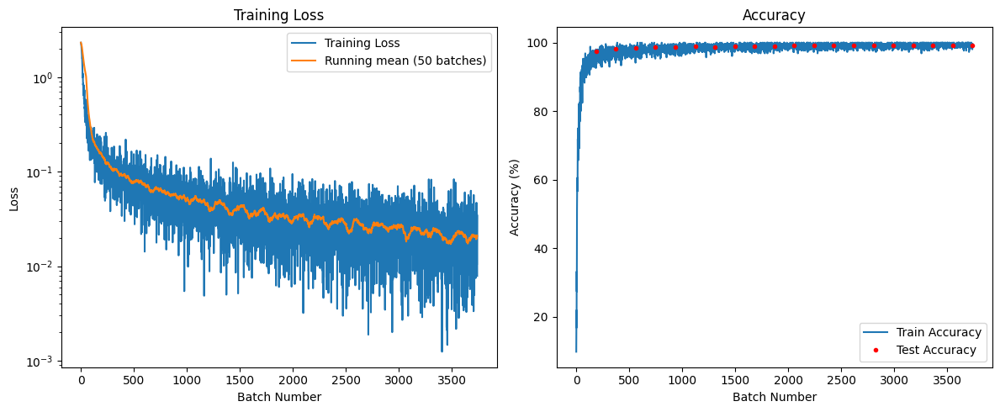
Ohodnocení modelu#
# Make predictions
model.eval()
with torch.inference_mode():
y_preds = model(X_test) # Apply softmax to get probabilities
y_pred_nums = np.argmax(y_preds.cpu(), axis=1)
correct = np.sum((y_pred_nums == np.argmax(y_test.cpu(), axis=1)).numpy()) # compare with true labels
print(f'Accuracy: {correct / len(y_test) * 100:.2f}%')
Accuracy: 99.31%
N = 64
plt.figure(figsize=(6, 8))
for i in range(N):
a = int(np.sqrt(N))
plt.subplot(a, a, i + 1)
image = X_test[i].cpu().squeeze().numpy() # Remove channel dimension
label = np.argmax(y_preds[i].cpu().detach().numpy())
plt.axis('off')
plt.imshow(image, cmap = 'gray')
plt.title(f'label: {label}')
plt.tight_layout(rect=[0, 0.03, 1, 0.95])
plt.suptitle('MNIST Predictions', fontsize=16)
plt.show()
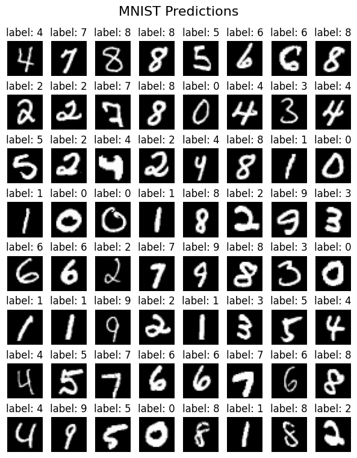
import datetime
dt = datetime.datetime.now().strftime('%Y%m%d%H%M%S')
print(dt)
torch.save(model.state_dict(), f'results/model_mnist_cnn_{dt}.pth')
20250623031638
#model.load_state_dict(torch.load('results/model_mnist_cnn_20250621162737.pth'))
Vizualizace#
from torchviz import make_dot
import os
os.environ["PATH"] += os.pathsep + 'C:/Program Files/Graphviz/bin/'
y_pred = model(X_train[0:1]) # Get predictions for the first training sample
make_dot(y_pred, params=dict(list(model.named_parameters()))).render("cnn_torchviz", format="png")
'cnn_torchviz.png'
import torchvision
from torchview import draw_graph
model_graph = draw_graph(model, input_size=(1,1,28,28), expand_nested=True, device=device)
model_graph.visual_graph
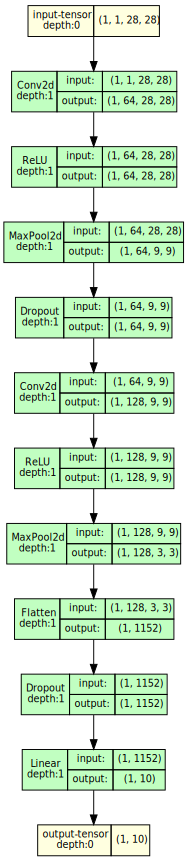
Váhy konvolučních vrstev#
weight_list = []
for m in model.modules():
if isinstance(m, nn.Conv2d):
print(m.weight.shape)
weight_list.append(m.weight)
torch.Size([64, 1, 5, 5])
torch.Size([128, 64, 5, 5])
cnv1_weights = weight_list[0]
plt.figure(figsize=(8, 8))
filter_count = np.minimum(cnv1_weights.shape[0], 4)
for i in range(filter_count):
plt.subplot(filter_count, 1, i + 1)
plt.imshow(cnv1_weights[i].cpu().squeeze().detach().numpy(), cmap='gray')
plt.axis('off')
plt.title(f'Filter {i + 1}')
plt.tight_layout()
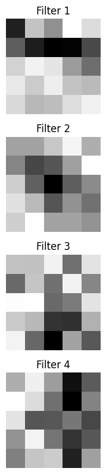
cnv2_weights = weight_list[1]
plt.figure(figsize=(12, 8))
filter_count1 = np.minimum(cnv2_weights.shape[0], 4)
filter_count2 = np.minimum(cnv2_weights.shape[1], 8)
for i in range(filter_count1):
for j in range(filter_count2):
plt.subplot(filter_count1, filter_count2, i*filter_count2 + j + 1)
plt.imshow(cnv2_weights[i,j].cpu().squeeze().detach().numpy(), cmap='gray')
plt.axis('off')
plt.title(f'Filter ({i + 1}, {j + 1})')
plt.tight_layout()
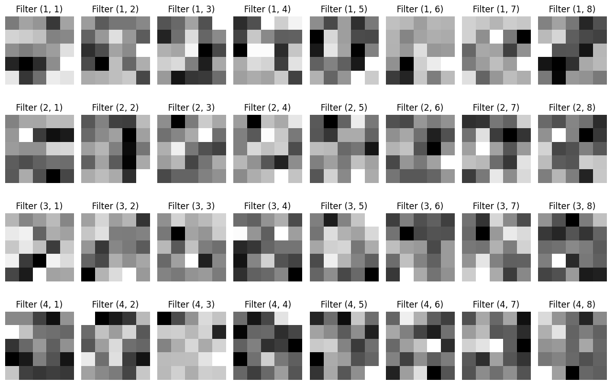
Aktivační hodnoty v neuronech#
idx = 47 #58
plt.figure(figsize=(3, 4))
image = X_test[idx].cpu().squeeze().numpy() # Remove channel dimension
label = np.argmax(y_preds[idx].cpu().detach().numpy())
plt.axis('off')
plt.imshow(image, cmap = 'gray')
plt.title(f'label: {label}')
#plt.tight_layout(rect=[0, 0.03, 1, 0.95])
plt.tight_layout()
#plt.suptitle('MNIST Predictions', fontsize=16)
plt.show()
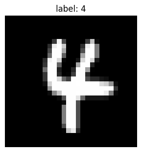
conv2d_layers = [m for m in model.modules() if isinstance(m, nn.Conv2d)]
activation = {}
def get_activation(name):
def hook(model, input, output):
activation[name] = output.detach()
return hook
conv2d_layers[0].register_forward_hook(get_activation('cnv1'))
conv2d_layers[1].register_forward_hook(get_activation('cnv2'))
y_pred = model(X_test[idx:idx+1].to(device))
num_pred = torch.argmax(y_pred, dim=1).detach().cpu().numpy().item()
print(f'Predicted label: {num_pred}, True label: {y_test[idx].argmax().item()}')
print(activation['cnv1'].shape)
print(activation['cnv2'].shape)
Predicted label: 4, True label: 4
torch.Size([1, 64, 28, 28])
torch.Size([1, 128, 9, 9])
plt.figure(figsize=(8, 3))
filter_count = np.minimum(activation['cnv1'].shape[1], 4)
for i in range(filter_count):
plt.subplot(1, filter_count, i + 1)
plt.imshow(activation['cnv1'][0, i].cpu().squeeze().numpy(), cmap='gray')
plt.axis('off')
plt.title(f'Filter {i + 1}')
plt.tight_layout()
plt.suptitle('Activation Maps for cnv2', fontsize=16);
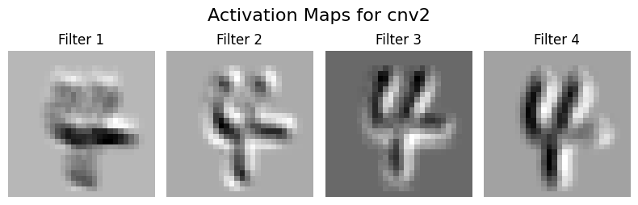
plt.figure(figsize=(16, 3))
filter_count = np.minimum(activation['cnv2'].shape[1], 8)
for i in range(filter_count):
plt.subplot(1, filter_count, i + 1)
plt.imshow(activation['cnv2'][0, i].cpu().squeeze().numpy(), cmap='gray')
plt.axis('off')
plt.title(f'Filter {i + 1}')
plt.tight_layout()
plt.suptitle('Activation Maps for cnv2', fontsize=16);
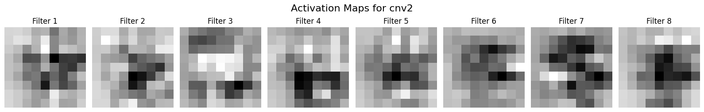
#
Analýza aktivací pro jednotlivé číslice#
activation['cnv1'].cpu().numpy().shape[1:] # Get the shape of the activation map for cnv1
(64, 28, 28)
activ_cnv1_stats = np.zeros((*activation['cnv1'].cpu().numpy().shape[1:], 10)) # (filters_shape, num_classes)
activ_cnv2_stats = np.zeros((*activation['cnv2'].cpu().numpy().shape[1:], 10)) # (filters_shape, num_classes)
for i in range(X_test.shape[0]):
y_pred = model(X_test[i:i+1].to(device))
num_pred = torch.argmax(y_pred, dim=1).detach().cpu().numpy().item()
if num_pred == y_test[i].argmax().item():
# Add to statistics
activ_cnv1_stats[:,:,:,num_pred] += activation['cnv1'].cpu().numpy().squeeze()
activ_cnv2_stats[:,:,:,num_pred] += activation['cnv2'].cpu().numpy().squeeze()
for i in range(num_classes):
activ_cnv1_stats[:,:,:,i] /= np.sum(y_test.cpu().numpy()[:, i]) # Normalize by the number of samples for each class
activ_cnv2_stats[:,:,:,i] /= np.sum(y_test.cpu().numpy()[:, i]) # Normalize by the number of samples for each class
activ_cnv1_stats.shape
(64, 28, 28, 10)
activ_cnv1_num = np.argmax(activ_cnv1_stats, axis=-1) # Get the index of the maximum value along the last axis (num_classes)
#print(activ_cnv1_num[1, :, :])
import matplotlib
cmap = plt.get_cmap('tab10', 10) # Use a colormap with 10 distinct colors
# define the bins and normalize
bounds = np.arange(0, 11)-0.5
norm = matplotlib.colors.BoundaryNorm(bounds, cmap.N)
fig = plt.figure(figsize=(12, 4))
filter_count = np.minimum(activ_cnv1_num.shape[0], 4)
for i in range(filter_count):
plt.subplot(1, filter_count, i + 1)
im = plt.imshow(activ_cnv1_num[i], cmap=cmap, norm=norm)
plt.axis('off')
plt.title(f'Filter {i + 1}')
cbar_ax = fig.add_axes([0.92, 0.2, 0.02, 0.65])
fig.colorbar(im, cax=cbar_ax, ticks=np.arange(11))
plt.suptitle('Most Activated Class for cnv1 Filters', fontsize=16)
#plt.tight_layout(rect=[0, 0.03, 0.9, 0.95])
plt.show()
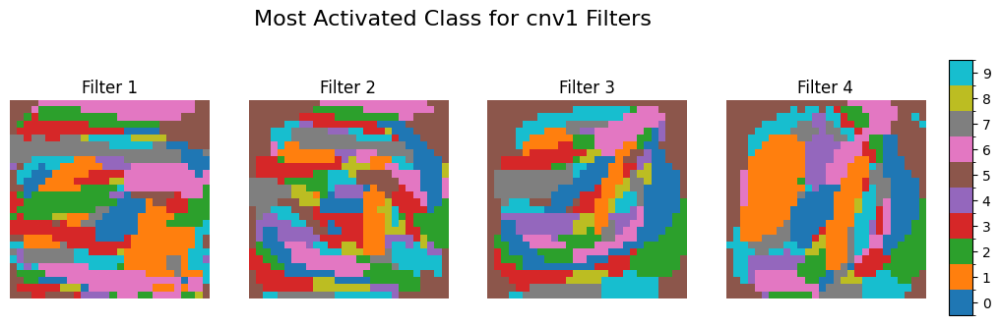
activ_cnv2_num = np.argmax(activ_cnv2_stats, axis=-1) # Get the index of the maximum value along the last axis (num_classes)
fig = plt.figure(figsize=(18, 5))
filter_count = np.minimum(activ_cnv2_num.shape[0], 4)
for i in range(filter_count):
plt.subplot(1, filter_count, i + 1)
im = plt.imshow(activ_cnv2_num[i], cmap=cmap, norm=norm)
plt.axis('off')
plt.title(f'Filter {i + 1}')
cbar_ax = fig.add_axes([0.92, 0.2, 0.015, 0.65])
fig.colorbar(im, cax=cbar_ax, ticks=np.arange(11))
plt.suptitle('Most Activated Class for cnv2 Filters', fontsize=16)
#plt.tight_layout(rect=[0, 0.03, 0.9, 0.95])
plt.show()
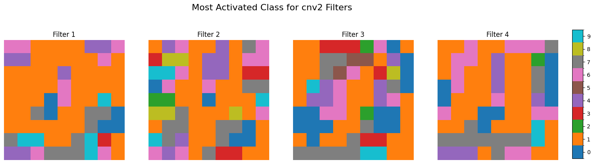
Chybné klasifikace#
y_test.shape
torch.Size([12000, 10])
def draw_output(idx_nums):
plt.figure(figsize = (20, 20))
plt.xticks( range(10) )
x = np.ceil(np.sqrt(len(idx_nums)))
cnt = 1
for ph in idx_nums:
plt.subplot(x, x, cnt)
curr_photo = y_test[ph]
plt.xlim(0, 10)
plt.title("Digit: {0}\n idx: {1} ".format(np.argmax(y_test[ph]), ph), fontsize = 10)
plt.bar(range(10), y_pred[ph])
cnt += 1
y_test_cpu = y_test.cpu().detach().numpy()
y_pred = model(X_test.to(device))
y_pred_cpu = y_pred.cpu().detach().numpy()
idx_noteq = np.argmax(y_test_cpu, axis=1) != np.argmax(y_pred_cpu, axis=1)
print(idx_noteq.sum(), "samples are misclassified")
cnt_error = np.argmax(y_test_cpu[idx_noteq], axis=1)
cnt_error = np.unique(cnt_error, return_counts = True)
plt.figure(figsize = (15, 7))
plt.title("Error distribution", fontsize=20)
plt.bar(cnt_error[0], cnt_error[1], color=plt.get_cmap('tab10').colors)
plt.xticks(np.arange(10))
plt.show()
83 samples are misclassified
cnt_ind = 1
list_idx = []
fig = plt.figure(figsize=(8, 8))
# Find indices of misclassified samples
misclassified_indices = np.where(np.argmax(y_test_cpu, axis=1) != np.argmax(y_pred_cpu, axis=1))[0]
# Randomly select 64 misclassified indices (or fewer if not enough)
num_to_plot = np.minimum(36, len(misclassified_indices))
#np.random.seed(42)
selected_indices = np.random.choice(misclassified_indices, size=num_to_plot, replace=False)
for i, idx in enumerate(selected_indices, 1):
plt.subplot(6, 6, i)
plt.imshow(X_test[idx, 0, :, :].cpu().numpy(), cmap='gray', interpolation='none')
true_label = np.argmax(y_test_cpu[idx])
pred_label = np.argmax(y_pred_cpu[idx])
plt.title(f'True:{true_label}, Predicted:{pred_label}\nidx={idx}', fontsize=8)
plt.axis('off')
plt.suptitle('Selected Misclassified Samples', fontsize=16)
plt.tight_layout()
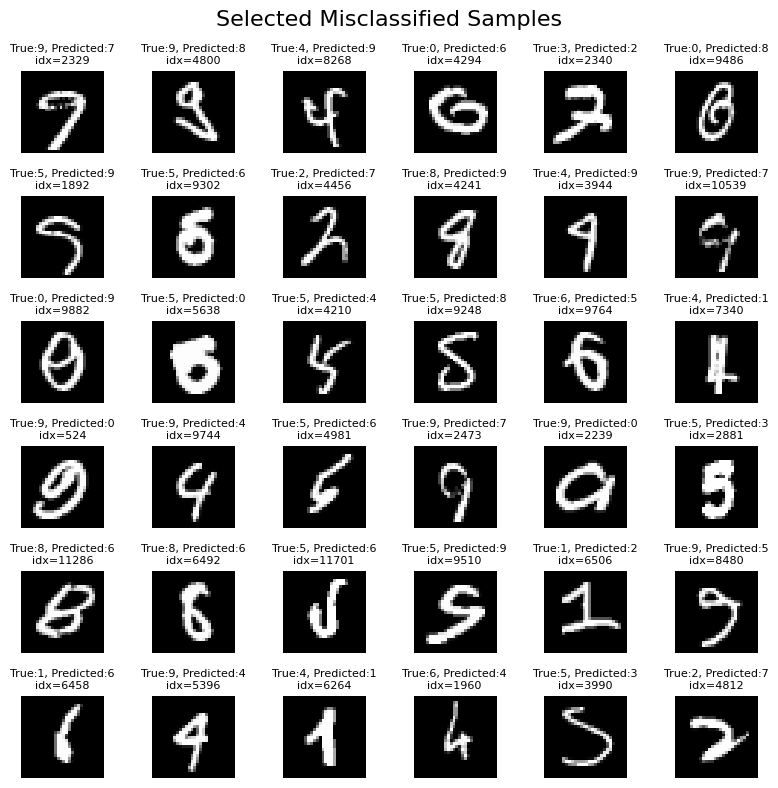
Zdroje#
https://www.kaggle.com/code/jedrzejdudzicz/mnist-dataset-100-accuracy